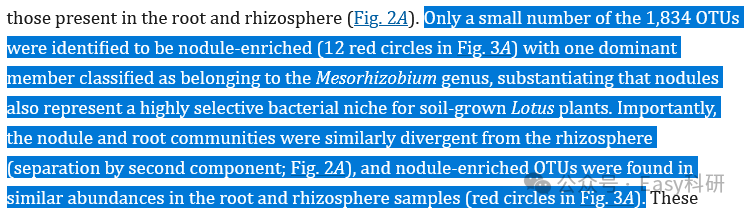
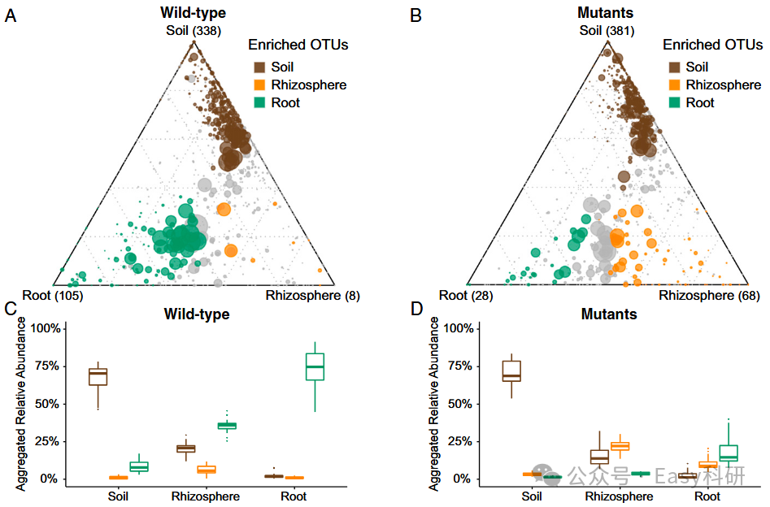

摘要LLM 归库摘要
- 核心内容： 三元图（Ternary plot）用于展示一群特征在三组间的相对比例差异。三角形三个角=三个组别，每个点=一个特征，点离哪个角近=在该组相对比例高。
- 适用场景： 微生物组（OTU/ASV/属在三种样本/处理）、转录组/蛋白组/基因组特征在三分组间的比例比较；只要数据可归一化为三种变量的比例即可。
- 输入： 特征×三组比例/丰度数据（每行一个特征，三列=三组），或 phyloseq 对象 + 三组分组变量。
- 输出： 正三角形散点图（ggtern 绘制），点颜色/大小/标签可映射额外信息。
- 关键步骤： ①
ggtern包绘图；②microbiomeutilities::prep_ternary()把 phyloseq 直接转三元图数据；③点大小映射平均丰度；④geom_text标注显著富集特征。- 常见错误： 组数必须恰好为 3；三元图缺统计检验，应配合箱线图/柱状图 + Kruskal-Wallis；坐标报 "Negative coordinates" 需检查数据是否已转比例且非负。
- 与口腔生信连接： 牙周炎/OSCC 中微生物组三组比较（如健康/龈炎/牙周炎、肿瘤/癌旁/正常）可用此模板；基因表达/通路评分在不同分子亚型间比较也可用。
- 下一步处理： 暂未试用；R 模板已同步至远程代码库
02_可视化/03_三元图/。- 归库说明： 分类到 03 生信教程与工具库（可视化与配色），置信度 0.88，理由：三元图可视化教程、含可复用 R 模板。
三元图（Ternary plot）— 组间差异可视化
来源公众号：Easy科研 · 纯肥瘦肉夹馍（2026-08-18）｜ 配套 R 模板已同步至代码库
组间差异可视化是理解不同组别生物学差异的关键步骤。常用箱线图、热图外，三元图也能用来展示一群特征在三组之间的比较。
原理#
- 可视化形式是正三角形，三个角代表三个组别。
- 三角形内部是一堆圆点，每个点代表一个特征。
- 点离哪个角近 → 在相应组中相对比例高；离哪个角远 → 相对比例低。
- 点的大小常映射平均丰度/占比。

三组联合展示示例：正三角形三点为组，圆点位置反映特征在三组的比例分布。
文献应用场景#
三元图在生信组学中应用广泛，只要数据能归一化为三种变量的比例即可。
| # | 文献 | 期刊(IF) | 三元图用途 |
|---|---|---|---|
| 1 | Root nodule symbiosis in Lotus japonicus (2016) | PNAS (9.4) | 微生物 OTUs 在根/根际/根瘤中的分布 |
| 2 | Core bacterial microbiota in xylem sap (2022) | Nat Commun (14.7) | 细菌属在三种施肥处理下的相对丰度 |
| 3 | Microbiota in bladder tumors (2024) | Physiol Genomics (2.5) | EMT/炎症相关基因表达在三个亚型中差异 |
| 4 | Microorganisms as bio-filters (2022) | iMeta (23.7) | 不同海拔样本微生物丰度差异 |
| 5 | Seed-borne bacteria drive wheat microbiome (2025) | Nat Microbiol (20.5) | KEGG 功能丰度在群落间比较 |
| 6 | APOBEC mutagenesis in bladder cancer (2022) | Theranostics (12.4) | 非沉默突变在三组 AMES 分布 |
| 7 | Graph pangenome tomato (2022) | Nature (50.5) | SNPs/indels/SVs 解释的遗传力比例 |
三元图 + 其他图组合#
三元图能直观看出分布，但缺少统计学检验。可通过组合弥补：
- 三元图 + 箱线图：三元图看分布 + 箱线图突出三组特异特征累计丰度的组间差异（用同一色系横向比较）。
- 三元图 + 柱状图：三元图看群落分布 + 柱状图展示主要门相对丰度并加显著性标记（Kruskal-Wallis）。

三组比较的组合表达示例：三元图展示分布，箱线图/柱状图补充统计检验。
快查数据格式#
| 输入方式 | 说明 |
|---|---|
| 数据框（通用） | 每行一个特征，三列 = 三组比例/丰度。ggtern(data, aes(x=A, y=B, z=C)) + geom_point() |
| phyloseq 对象（微生物） | microbiomeutilities::prep_ternary(x, group="分组", level="Genus") 一键转三元图数据 |
使用指引#
R 模板位于远程代码库 hz-bioinfo-codes/02_可视化/03_三元图/01_ternary_plot_template.R，包含：
- 场景 A：phyloseq 数据 →
prep_ternary() - 场景 B：数据框直接绘图（推荐，自备数据）
- 进阶：
geom_text标注显著富集特征 - 关键提醒（组数、统计检验、数据归一化）
参考链接
- 公众号原文：https://mp.weixin.qq.com/s/_gHhC6Ct-RLryrAmQ7yoOQ
- ggtern 包：https://CRAN.R-project.org/package=ggtern
- microbiomeutilities::prep_ternary：https://microsud.github.io/microbiomeutilities/reference/prep_ternary.html